41 - Archivo strings.xml |
El archivo strings.xml se utiliza para almacenar todas las constantes de cadenas de caracteres que se necesitan en un programa (por ejemplo las etiquetas de los objetos Button, los textos de los controles TextView y todos los controles que muestran un texto en el dispositivo)
La idea fundamental es tener todos los mensajes que muestra nuestra aplicación en un archivo (strings.xml) no lo hemos hecho hasta este momento ya que nos torno un grado más complejo el desarrollo de ejercicios que tienen por objetivo el aprendizaje de programación java en Android. Cuando hagamos una aplicación más importante es necesario aplicar este estilo de organizar los mensajes de nuestra aplicación.
Ya veremos en el próximo concepto que uno de las ventajas que presenta esta agrupación de string es la posibilidad de facilitar la implementación de aplicaciones en múltiples idiomas.
Crear un proyecto que solicite la carga de dos valores. Mediante dos RadioButton permitir seleccionar si queremos sumar o restar. Cuando se presione un botón mostrar en un TextView el resultado de la operación.
1 - Creamos un proyecto llamado: Proyecto044
El Android Studio nos crea automáticamente el archivo strings.xml en la carpeta values que se encuentra en la carpeta res:
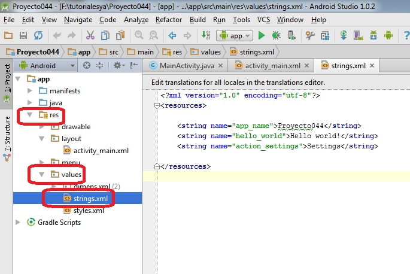Si vemos en su interior podemos ver que ya define tres string llamados app_name, hello_world y action_settings:
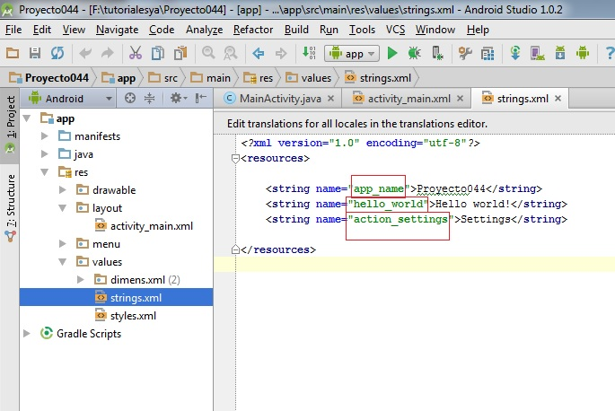Lo que se encuentra entre las marcas string es lo que se visualizará, por ejemplo en la constante hello_world se almacena el valor "Hello world!". En este archivo crearemos todas las constantes a incluir en nuestro programa.
Estas tres constantes que crea por defecto el Android Studio se están utilizando en distintas partes del programa.
La constante hello_wold por ejemplo la utiliza en el TextView que dispone dentro del ActionBarActivity:
Como podemos ver para indicar una constante definida en el archivo string.xml debemos utilizar la sintaxis:
@string/hello_world
Es decir disponemos @string/ y seguidamente el nombre de la constante definida en el archivo string.xml.
Hay varias formas de crear estas constantes:
La escribimos directamente en el editor de texto del archivo string.xml:
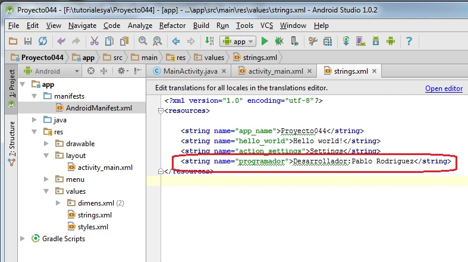Es decir estamos creando una constante llamada "programador". Para hacer referencia en nuestro programa indicaremos @string/programador y el dato que se mostrará será: "Desarrollador:Pablo Rodriguez".
Probar de cambiar la propiedad text del EditText por defecto que agregó el Android Studio por la constante "programador", el resultado debe ser el siguiente:
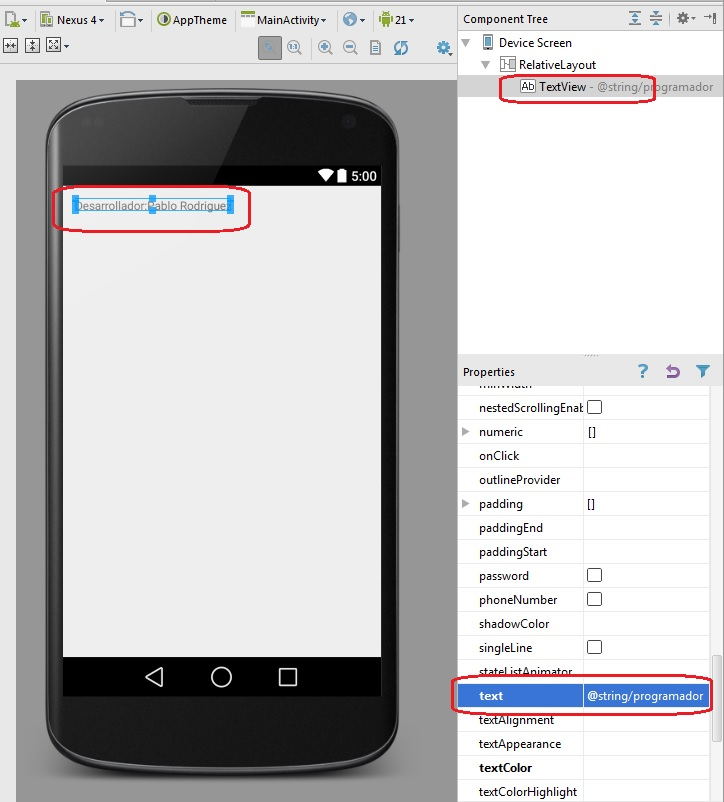La segundo forma es utilizar un editor visual que nos escriba el xml, esto se accede presionando la opción "Open editor":
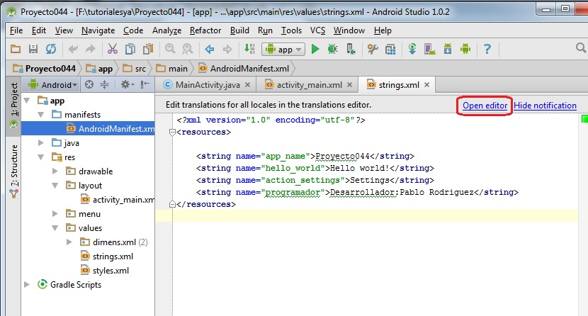En esta pantalla tenemos dos columnas con todas las constantes en la primer columna y los valores de las mismas en la segunda. Podemos con el mouse seleccionar cualquiera de ellas y editarlas en la parte inferior:
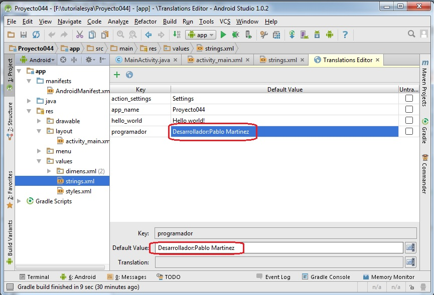También podemos añadir nuevas constantes presionando el botón con el ícono "más" de la parte superior izquierda, creemos nuestra segunda constante llamada "version_aplicacion" con el valor 2:
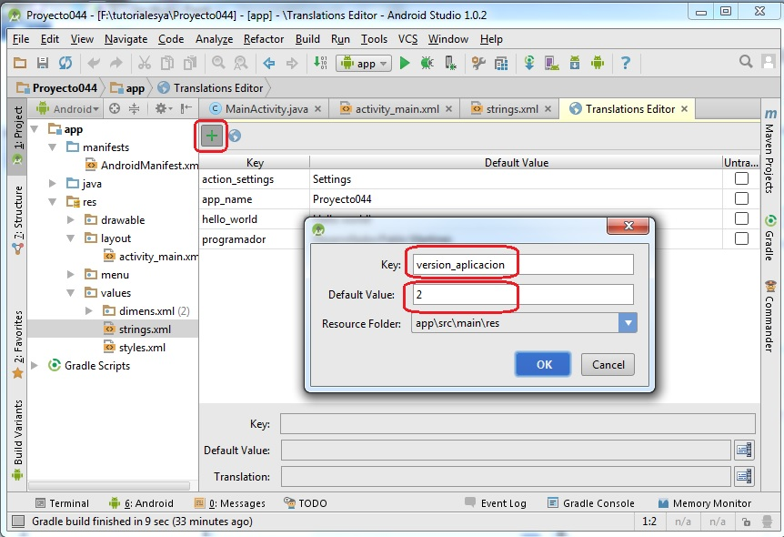En principio con este editor de constantes nos evitamos de escribir y cometer algún error sintáctico en nuestro archivo strings.xml
La tercer forma es crear la constante en el momento que disponemos un control en la interfaz visual, por ejemplo dispongamos un botón en la parte inferior que muestre el mensaje "Finalizar Programa" localizando este texto en el archivo strings.xml:
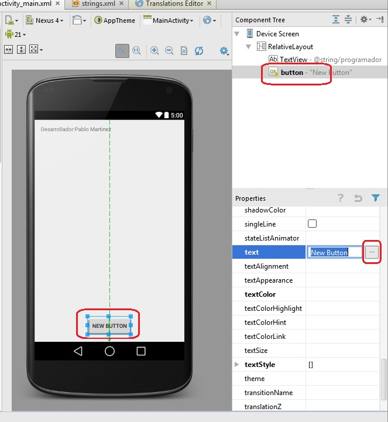Presionamos el botón que aparece al lado de donde ingresamos el texto y en este diálogo procedemos a elegir la opción de "New String Value":
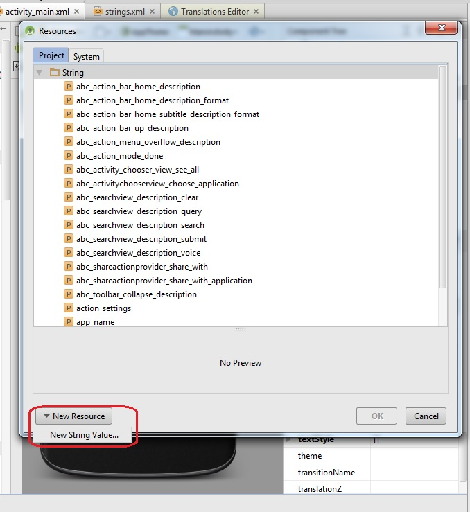Finalmente es este diálogo procedemos a especificar el nombre de la constante, el valor y en "File Name" elegimos el archivo strings.xml:
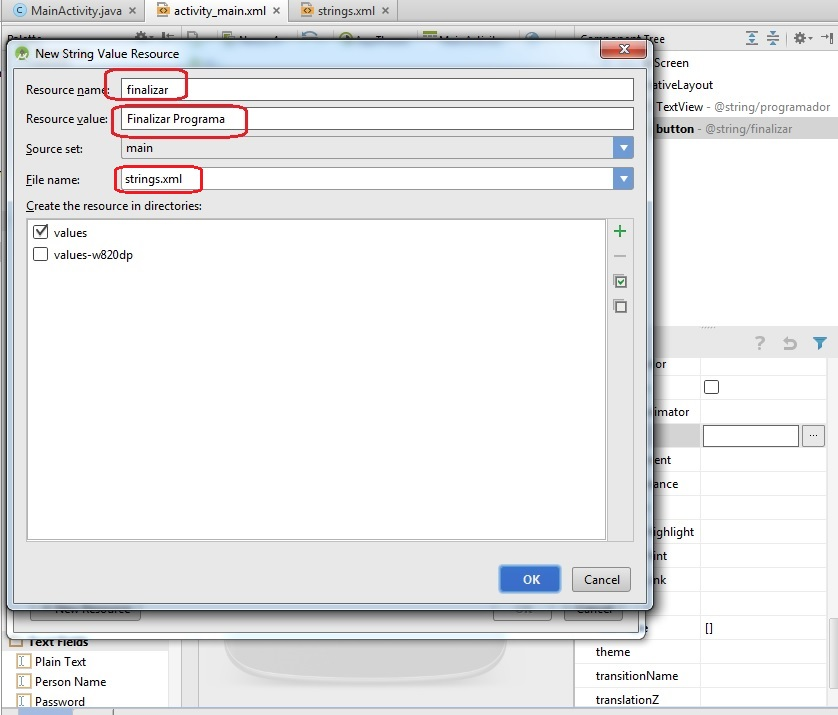Crearemos ahora la interfaz visual propuesta por el problema planteado al principio de este concepto. Disponiendo dos controles de tipo EditText, un RadioGroup con dos RadioButton, un Button y un TextView donde se muestra el resultado de la operación:
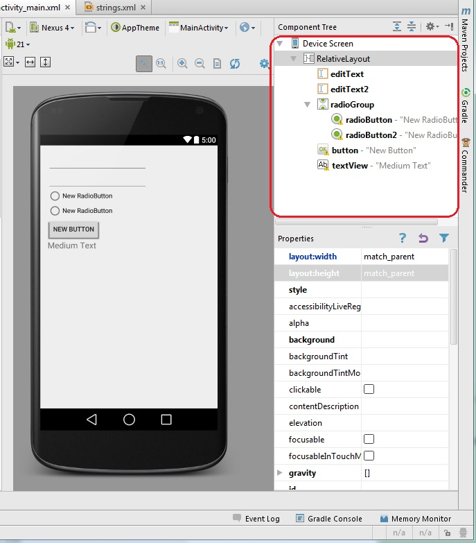Ahora si crearemos los mensajes que mostrarán los dos RadioButton y el Button. Para esto seleccionamos el archivo strings y procedemos a crear las tres constantes (de la primera o segunda forma creamos las tres constantes):
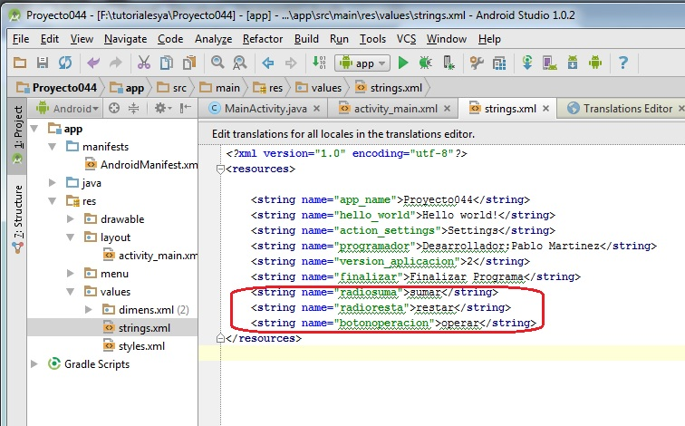Ahora debemos asociar estas constantes a los controles visuales. Seleccionamos el archivo activity_main.xml y seleccionamos primero el primer RadioButton y buscamos la propiedad text, presionamos el botón que aparece a la derecha:
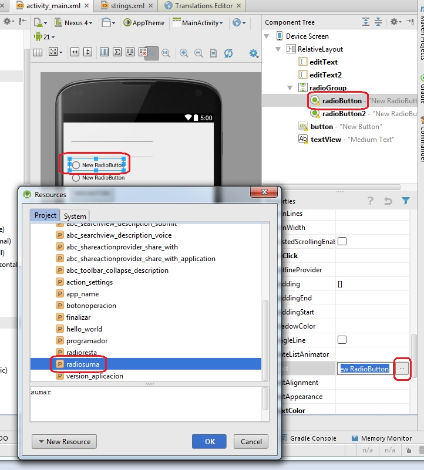En este diálogo seleccionamos la constante de string que acabamos de crear ("radiosuma")
Lo mismo hacemos para asociar las constantes para el segundo RadioButton y el Button de operar. Es decir las propiedades text del radio1 debe quedar con el valor "@string/radioresta" y el valor de la propiedad text del objeto button debe ser "@string/botonoperacion"
Como vemos cuando asociamos las propiedades text de los controles con las constantes automáticamente vemos en pantalla que los textos de los controles se actualizan con los valores almacenados en dichas constantes.
Para que funcione nuestro programa inicializamos la propiedad onClick del Button con el método que sumará o restará (llamado operar):
El código fuente del programa será:
package ar.com.tutorialesya.proyecto044;
import android.support.v7.app.ActionBarActivity;
import android.os.Bundle;
import android.view.Menu;
import android.view.MenuItem;
import android.view.View;
import android.widget.EditText;
import android.widget.RadioButton;
import android.widget.TextView;
public class MainActivity extends ActionBarActivity {
EditText et1, et2;
RadioButton rb1, rb2;
TextView tv1;
@Override
protected void onCreate(Bundle savedInstanceState) {
super.onCreate(savedInstanceState);
setContentView(R.layout.activity_main);
et1 = (EditText) findViewById(R.id.editText);
et2 = (EditText) findViewById(R.id.editText2);
rb1 = (RadioButton) findViewById(R.id.radioButton);
rb2 = (RadioButton) findViewById(R.id.radioButton2);
tv1 = (TextView) findViewById(R.id.textView);
}
@Override
public boolean onCreateOptionsMenu(Menu menu) {
// Inflate the menu; this adds items to the action bar if it is present.
getMenuInflater().inflate(R.menu.menu_main, menu);
return true;
}
@Override
public boolean onOptionsItemSelected(MenuItem item) {
// Handle action bar item clicks here. The action bar will
// automatically handle clicks on the Home/Up button, so long
// as you specify a parent activity in AndroidManifest.xml.
int id = item.getItemId();
//noinspection SimplifiableIfStatement
if (id == R.id.action_settings) {
return true;
}
return super.onOptionsItemSelected(item);
}
public void operar(View v) {
int v1 = Integer.parseInt(et1.getText().toString());
int v2 = Integer.parseInt(et2.getText().toString());
if (rb1.isChecked()) {
int suma = v1 + v2;
tv1.setText(String.valueOf(suma));
} else if (rb2.isChecked()) {
int resta = v1 - v2;
tv1.setText(String.valueOf(resta));
}
}
}
El resultado final del programa en el dispositivo es:
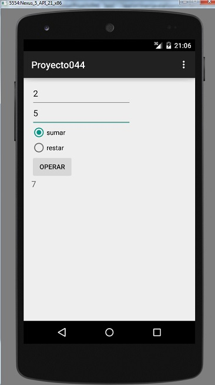Este proyecto lo puede descargar en un zip desde este enlace: proyecto044.zip